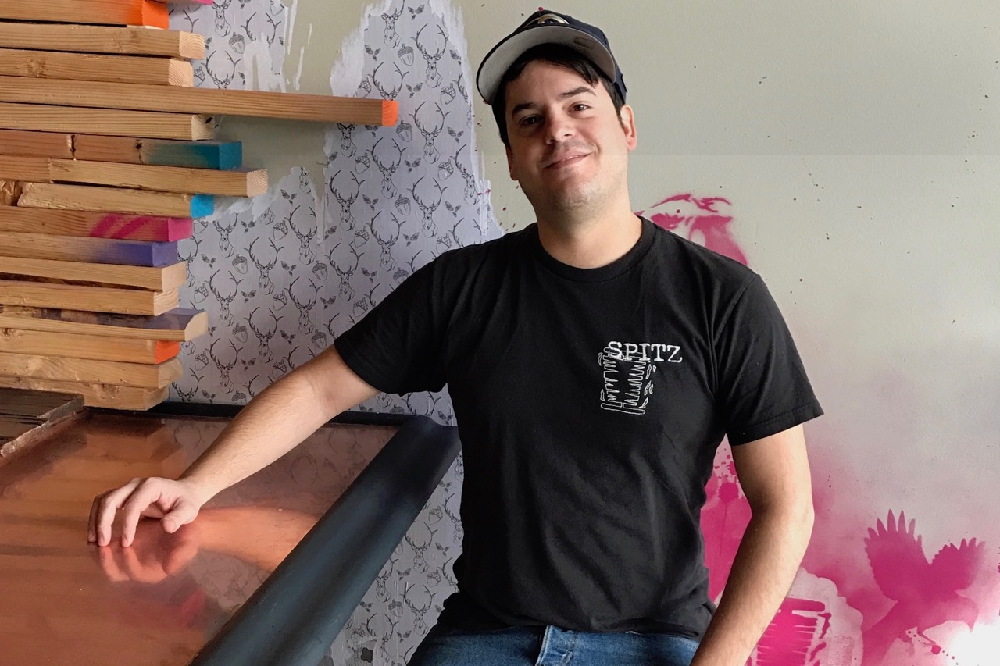

<div class="about">
  <div id="mainContent">
   
    <div class="container">
      <div class="row">
        <div class="col-sm-12">
          <div class="content">
            
            <h2>The Story (THE FOOD!!)`</h2>
            <!-- <p class="hidden-phone hidden-tablet"><strong>The Story</strong></p> -->
            <p style="margin-top: -5px;">The groundwork for Spitz was laid in 2005 at Occidental College in Los Angeles. Founder Bryce Rademan returned from a semester studying abroad in Europe with dreams of bringing the Mediterranean street food (specifically döner kebab or “spit” of rotating meat) he fell in love with home to the U.S. That Spring he teamed up with close friend Robert Wicklund and both set aside their law school ambitions to follow their entrepreneurial instincts.</p>
            <p>Rademan and Wicklund set about learning everything they could about about the cuisine and tested countless versions of recipes in their school’s kitchens...taking what they had eaten every night on the streets of Europe and combining it with the California freshness, color and flavor they were inspired by in Los Angeles. They hashed out a business plan and on April 12th, 2006 the first Spitz location was opened a mile from their alma mater.</p>
            <p><strong>Our Portland location was opened by Fernando Del Valle and Christopher Retzer in March, 2017. Prior to taking ownership of his their first Spitz, Fernando served as a General Manager for several LA-based locations and Chris, a Portland native, provided backing for the Del Valle family to begin their journey to the Northwest! Fernando and Chris are joined by a handful of longtime Spitz family members and a great new crew in Portland. </strong></p>
            <p><strong>Thank you all for the warm welcome...we hope to see you soon!</strong></p>
          </div>

        </div>

      </div>
    </div>
    <!-- container -->


  </div>
</div>
